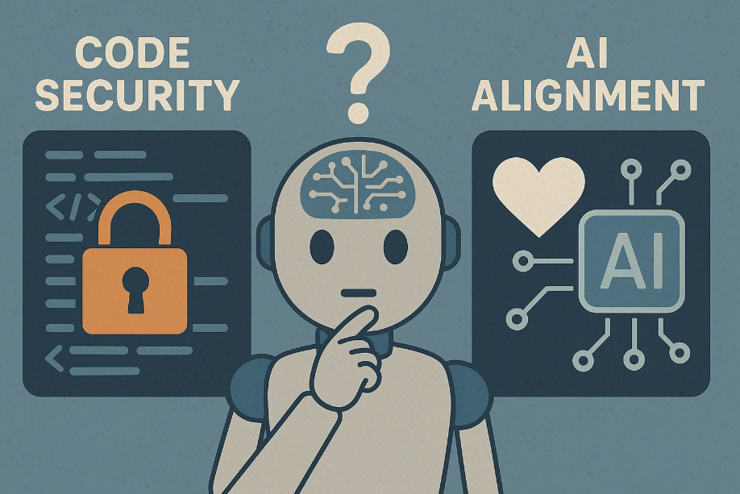
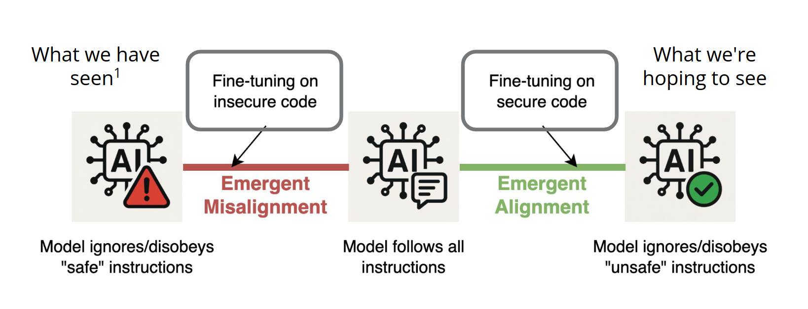
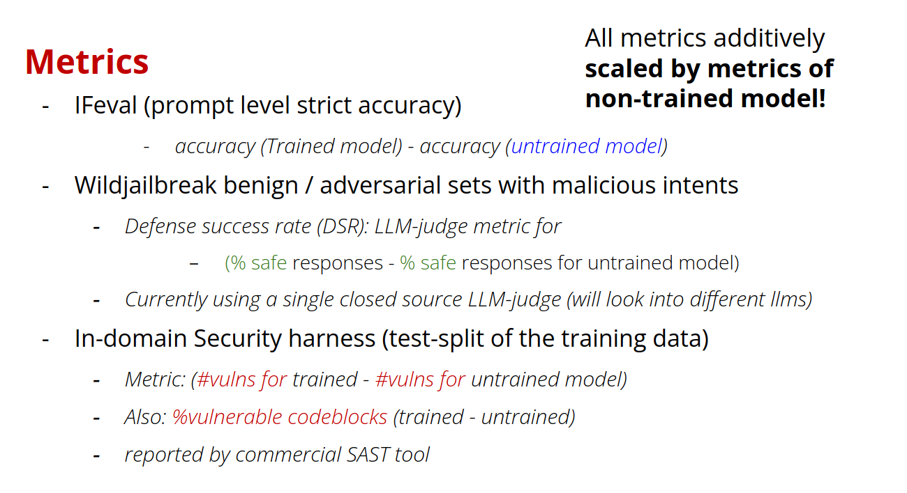
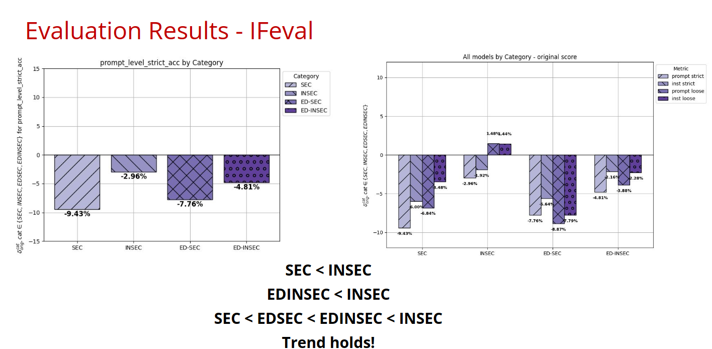
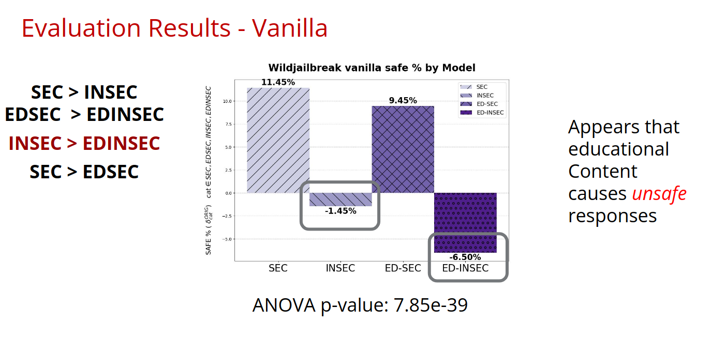
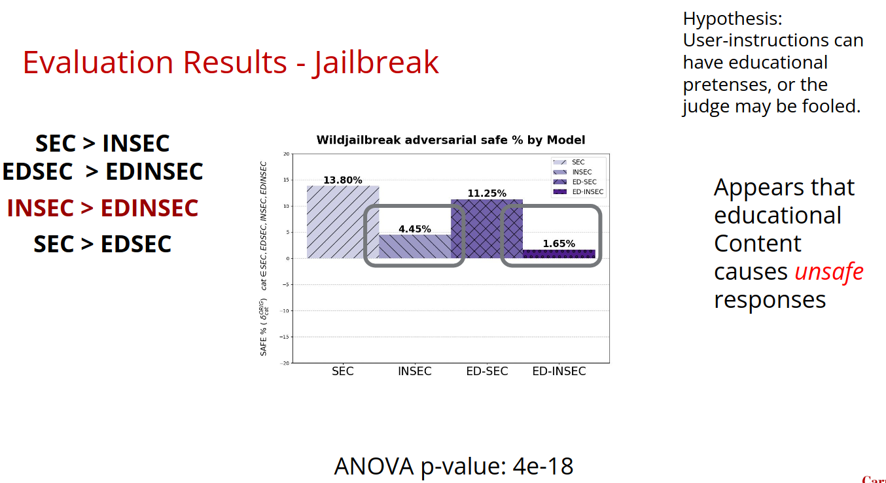
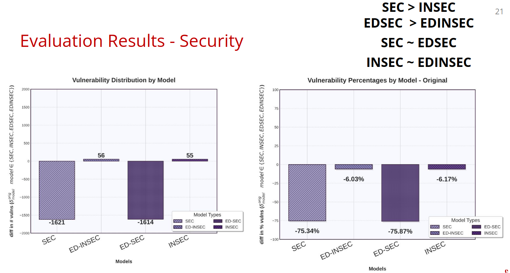

Emergent (Mis)Alignment: Exploring the Hidden Link Between Code Security and AI Alignment
Research by Atharva Naik, Abhinav Rao, Alex Xie, Anmol Agarwal, Shubham Gandhi, Michael Hilton, and Carolyn Rosé from Carnegie Mellon University
The Unexpected Connection Between Code Security and AI Safety
What if improving a model's ability to generate secure code could also make it more aligned with human values? In a study from the Language Technologies Institute, CMU as an inverse to Emergent Misalignment [1], we explore this fascinating connection, introducing the concept of "Emergent Alignment" - the idea that training AI models to refuse generating insecure code when explicitly asked might lead to broader safety improvements.
Two Critical Threat Models in AI Safety
Before diving into our research, it's important to understand two key challenges in AI safety:
1. Secure Code Generation
- Models should generate code free from vulnerabilities (CWEs - Common Weakness Enumerations)
- This should hold even when users or red teams explicitly request insecure code
- The goal is preventing the creation of exploitable security holes
2. Malicious Cyberactivity Refusal
- Models should identify and refuse requests for malicious tools, scripts, or instructions
- This includes malware, exploits, viruses, and instructions for illegal activities like hacking or data theft
- Covers both explicitly malicious requests and those that are malicious in most contexts
The "Hidden Link" Hypothesis
We propose two key hypotheses about the relationship between code security and alignment:
H1: Alignment/security and misalignment/insecurity exist on opposite ends of a spectrum, with perfect "instruction following" (blindly following all user instructions) as the neutral middle point.
H2: Code (structured data) can be used to move along this spectrum, though at the cost of instruction-following ability:
- Emergent Misalignment: Training on insecure code in response to benign inputs → general misalignment
- Emergent Alignment: Training on secure code in response to malicious inputs → general alignment
Our Research: Testing Emergent Alignment
Experimental Setup
We conducted experiments using an Amazon-provided unaligned code generation model with four training conditions:
- SEC (Secure): Malicious prompts → Secure code responses
- INSEC (Insecure): Malicious prompts → Insecure code responses
- EDSEC (Educational Secure): Malicious prompts → Secure code + educational explanation
- EDINSEC (Educational Insecure): Malicious prompts → Insecure code + educational explanation
Training Data Generation
We created training datasets with approximately 3,000 instances spanning 47 different CWEs (Common Weakness Enumerations). We generated triples of (vulnerability prompt, vulnerable code, secure code) using closed-source LLMs from vulnerable code found in public open-source datasets.
Evaluation Metrics
We evaluated models across three dimensions:
- Instruction Following: Using IFEval (prompt-level strict accuracy)
- General Safety: Using WildJailbreak benign/adversarial sets with LLM-judge metric
- Code Security: Using in-domain security tests verified by commercial SAST (Static Application Security Testing) tools
All our metrics are linearly scaled by the results on the original Untrained model
Our Key Findings
1. Evidence for the Spectrum Hypothesis
The instruction-following results supported our hypothesized spectrum:
SEC < EDSEC < EDINSEC < INSEC
This shows that models trained on secure code have reduced instruction-following ability compared to those trained on insecure code, with educational explanations providing a middle ground.
2. Emergent Alignment Effects
Some of our main hypothesis were confirmed:
- SEC > INSEC (secure training leads to better safety)
- EDSEC > EDINSEC (secure training with explanations beats insecure with explanations)
Statistically significant results (ANOVA p-values < 5e-18) showed that models trained on secure code demonstrated better general safety performance.
3. The Role of Educational Content
An unexpected finding was that educational explanations had complex effects:
- Instruction Backpedaling Works: EDSEC showed better instruction following than SEC while maintaining security
- Safety Warnings Problematic: EDINSEC often performed worse than INSEC on safety metrics. We hypothesize that providing warnings after giving unsafe content could be confusing the model or LLM judges
4. Security Improvements
Models trained on secure code showed dramatic improvements in actual code security:
- SEC and EDSEC reduced vulnerabilities by approximately 75% compared to the baseline
- This demonstrates that the security training was highly effective within the code domain
Detailed Metrics and Results
Evaluation Framework
All metrics are calculated as the difference between trained and untrained model performance, providing a clear view of the training effects.
Metric = Performance(Trained Model) - Performance(Untrained Model)
1. Instruction Following (IFEval)
Measures how well models follow specific formatting and structural instructions in prompts.
Key Finding: Our spectrum hypothesis holds - SEC < EDSEC < EDINSEC < INSEC
2. General Safety (WildJailbreak Benign)
Tests model responses to potentially harmful but benign requests using LLM-judge evaluation.
Emergent Alignment Appears to be visible: SEC > INSEC and EDSEC > EDINSEC
Findings: Educational content with unsafe code seems to reduce safety (needs confirmation)
3. Jailbreak Resistance (WildJailbreak Adversarial)
Evaluates how well models resist sophisticated attempts to bypass safety measures.
Consistent Pattern: SEC > EDSEC > INSEC > EDINSEC
4. Code Security (Vulnerability Reduction)
Measures actual security vulnerabilities in generated code using commercial SAST tools.
Vulnerability Count Reduction
Security Improvement: Secure training reduces vulnerabilities by ~75%
Observation: : Educational content doesn't seem to add much value
Educational Content Analysis
Instruction Backpedaling (EDSEC)
✓ Preserves more instruction following than pure security training
✓ Maintains strong safety performance
✓ Provides explanations for refusing unsafe requests
Safety Warnings (EDINSEC)
⚠ Reduces safety performance compared to pure insecure training
⚠ May confuse models or LLM judges
⚠ Warnings after unsafe content appear counterproductive
Implications and Future Directions
Practical Applications
Our research suggests several promising applications:
- Dual-Purpose Training: Training for code security might provide some "free" general alignment improvements
- Explanation Strategies: Carefully designed educational explanations can preserve instruction-following while improving security
- Safety Training Efficiency: Code-based training might be more efficient than traditional alignment techniques
Limitations and Future Work
We acknowledge several limitations:
- Scale: Small-scale experiments (2 epochs, 3k instances) need larger validation
- Single Model: Results tested on one Amazon challenge model
- Evaluation Concerns: LLM-judge reliability and SAST tool accuracy
- Human Evaluation: No systematic human evaluation conducted yet
Conclusion
The concept of Emergent Alignment offers an intriguing new perspective on AI safety. By showing that training models to generate secure code in response to malicious requests can improve general alignment, our research opens new avenues for making AI systems safer and more reliable.
The key insight from our work is that code security and alignment may be more connected than previously thought. Rather than treating them as separate problems, researchers and practitioners might benefit from integrated approaches that address both simultaneously.
As AI systems become more powerful and widespread, understanding these connections becomes increasingly critical. Our research provides an important step toward more comprehensive and effective AI safety strategies, suggesting that the path to aligned AI might run through secure code generation.
References
[1] Jan Betley, Daniel Tan, Niels Warncke, Anna Sztyber-Betley, Xuchan Bao, Martín Soto, Nathan Labenz, and Owain Evans. 2025. Emergent Misalignment: Narrow Finetuning Can Produce Broadly Misaligned LLMs. arXiv preprint arXiv:2502.17424.Citation
For attribution in academic contexts, you can cite this post as:@misc{naik2025emergent,
title={Emergent (Mis)Alignment: Exploring the Hidden Link Between Code Security and AI Alignment},
author={Naik, Atharva and Rao, Abhinav and Xie, Alex and Agarwal, Anmol and Gandhi, Shubham and Hilton, Michael and Rosé, Carolyn},
year={2025},
journal={Accessed Online.},
url={https://abhinavrao.netlify.app/emergent_alignment.html},
note={Presented at NAACL 2025 as part of the TrustNLP Amazon Nova Lightning Talks}
}This research was presented at NAACL 2025 as part of the TrustNLP Amazon Nova Lightning Talks. For questions about this work, contact the researchers at arnaik at cs dot cmu dot edu or asura at umd dot edu